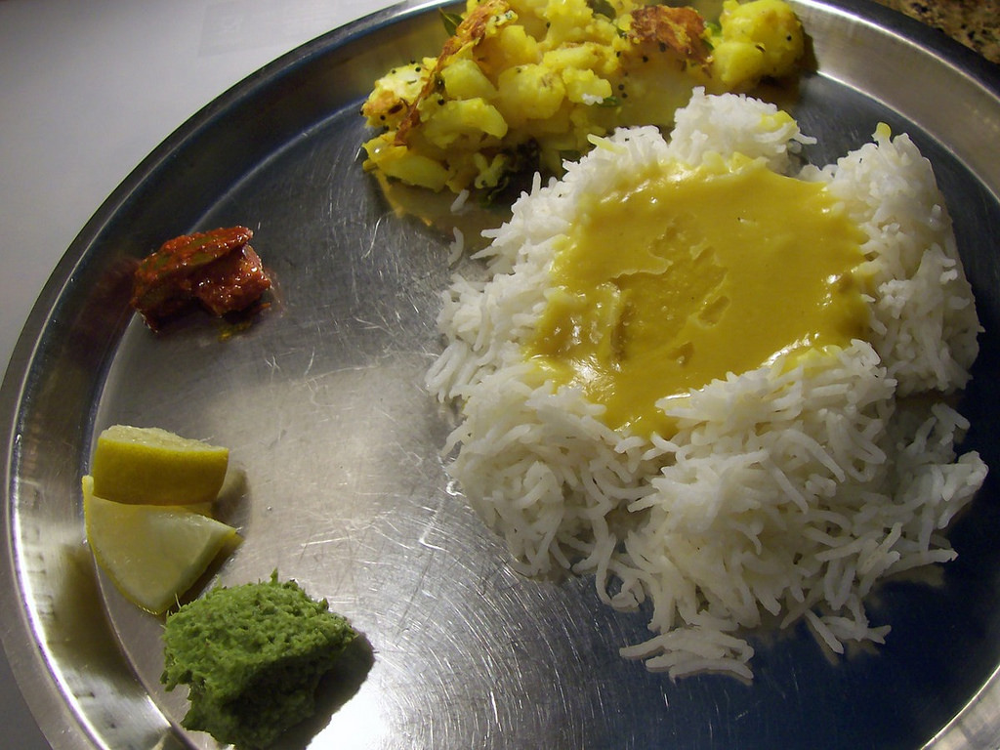

Delicacies of Mumbai!!!
1. Vada Pav
Whether it's for breakfast, teatime, or anytime, one thing is for sure, Mumbaikars can’t live without the Batata Vada bite. This well-liked fast food dumpling is made by mashing boiled potatoes with green chilies, ginger, garlic, lime juice, turmeric, and fresh coriander, then dipped in a besan (gram flour) batter and deep fried. It's served either with a green chutney or fried green chillies.
Where to find it : Any street corner in Mumbai!!!!
2. Bhel Puri

The most commonly sold chaat on the streets of Mumbai, every bhel walla will have his own matchless blend and a considerable 7pm fan following. While the ingredients -- puffed rice, papadi (small crisp deep fried flour puris), sev, onions, potatoes, raw mango and sweet and sour chutney -- remain the same, it is the proportions in which they are thrown together on the street side that makes the difference.
Where to find it : Bhel puri is available everywhere. The stalls at Chowpatty and Juhu beaches draw throngs of die-hard fans!!
3. Kheema Pao
Minced mutton cooked with onions, garlic, tomatoes, chillies and spices takes on many avatars here. In its original form, it is refereed to as plain Kheema. Topped with a crisply fried sunny side up egg, it is called kheema single fry. And scrambled with eggs, it is called ghotala. And all three are best eaten with Mumbai's signature pao bread bun. Traditionally a breakfast dish, it is now eaten at all times of the day or night.
Where to find it : Stadium Restaurant, IMC Building, Veer Nariman Road, Churchgate, Tel: +91 (0) 22 2204 6819. Or at Olympia, Rahim Mansion, 1 Shahid Bhagat Singh Road, Colaba, Tel: +91 (0) 22 2202 1043.
4. Misal pao
Quintessentially from Pune, this rustic dish is made from a mix of curried sprouted lentils, topped with batata (potato) bhaji, poha (rice flakes), chivda, farsan, raw chopped onions and tomato. This hot and spicy dish is eaten with pao bread. To cut the fire, add some yogurt.
Where to find it : A good version can be found at Vinay Health Home, 71/83, Jawahar Mansion, Fanaswadi-Thakurdwar Corner, Girgaum. Tel: +91 (0) 22 2208 1211
6. Pav bhaji
This specialty dish from the by-lanes of Mumbai has mashed steamed mixed vegetables (mainly potatoes, peas, tomatoes, onions and green pepper) cooked in spices and loads of butter. It is eaten with pao, which is shallow fried in even more butter and served with chopped onions. Sometimes cheese and paneer (cottage cheese) are added. People from all over India come to Mumbai to eat pao bhaji.
Where to find it : Though widely available at local restaurants, try the sinful pao bhaji at Sardar, 166A Tardeo Road Junction, Opp. Bus Depot, Tardeo. Tel: +91 (0) 22 2353 0208
7. Sabudana vada
For Maharashtrians, sabudana vada is the traditional 'upvas' or fasting food and the really hardcore folk fast up to four times a week. And the good news is that the restaurants never fail to oblige with hot crisp sabudana vadas for those who don’t have the time to make it at home. Sago is soaked until it puffs up. Crushed boiled potatoes, green chillies, coriander leaves and salt are kneaded in. They are then fashioned into palm-sized patties and deep fried until they turn crisp and golden. And then one bite leads to another and another.
Where to find it : Sabudana vadas are available at most Udipi hotels and roadside stalls. But try the ones at the R K Studio Canteen, Chembur. They are really special.
8. Varan bhaat
If you wanted to name one truly soul satisfying food of Mumbai city, then this would be it. The simple and truly humble dish is made by lightly tempering cooked-till-soft toor dal (a lentil) with ghee (clarified butter), turmeric and cumin powder. Served over steaming hot rice, or bhaat, it assumes magical, mythical proportions.
Where to find it : A staple in Maharashtrian homes, that's really where you should be eating it. But do give Diva Maharashtracha a try. T H Kataria Marg, Mahim. Tel: +91 (0) 22 2445 4433.
9. Zhunka bhakar
This dish has deep roots in the farming and working class communities of interior Maharashtra. Considered the common man's food, a political decision was made at the highest echelons of government to make it available everywhere. Overnight, thousands of zhunka bhakar stalls opened, none pricing it more than Rs 10. Traditionally, the zhunka is made using chopped onions tempered with mustard seeds and kadipatta leaves mixed with chickpea flour and is dry. It is eaten with jowar (millet) bhakri or roti.
Where to find it : Try the stalls opposite Chhatrapati Shivaji Terminus (originally called Victoria Terminus) and BMC Headquarters.
10. Prawns Koliwada
Contrary to popular belief that this dish originated on the Konkan coast, it is actually a very Mumbai dish and the story goes that it was created in the Sion fishing village, or koliwada, by -- and here’s the twist -- a north Indian immigrant from Punjab. These deep-fried prawns marinated in a batter of flour, spices and ginger garlic paste can be identified by their signature red color. And they are crunchy yet melt in the mouth. Pick the smaller sized prawns, they taste better.
Where to find it : Try the real thing at Hazara, GTB Nagar, Near the Gurudwara, Sion (W). Tel: +91 (0) 22 2409 2617